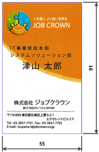
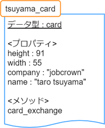
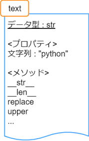
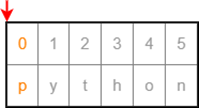
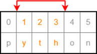

2. イテラブルオブジェクト
2.1. そもそもオブジェクトとは
本章の本題であるイテラブルオブジェクトを学ぶ前に、そもそもオブジェクトというものが何なのかを説明しましょう。
例えば、ここに私の名刺があります。
この名刺のプロパティとメソッドはこんな感じになるでしょう。
- (プロパティ)
- タテ: 91mmヨコ: 55mm社名: 株式会社ジョブクラウン氏名: 津山太郎
- (メソッド)
交換する: 相手に自分の情報を伝えると共に、相手が名刺を持っている場合相手の名刺が手に入る
これを card というデータ型のオブジェクト tsuyama_card と定義するとこんな感じになります。
text = "python"
変数 text を図で表すと次のようになります。
print(text.__str__())
print(text.__len__())
2.1.1. メソッド
text = "python"
text = text.replace("p","j")
text = text.replace("yth","obcr").replace("on","own")
print(text)
text = text.upper()
print(text)
print(dir(text))
2.2. イテラブルオブジェクトとは
Pythonでよく扱うイテラブルオブジェクトに分類されるデータ型は次のとおりです。(他にもあります)
文字列 (str)
リスト (list)
タプル (tuple)
セット (set)
ディクショナリ (dict)
some_list = ["Python", "勉強会", "Jobcrown"] # 3 つのデータを格納している状態
様々なデータをひとつのオブジェクトに格納して処理できるというのがイテラブルオブジェクトの強みの一つです。
2.3. スライス
text = "python"
c = text[0]
print(c)
下図のように 0 番目の要素を指し示しているので "p" が取得できます。
c = text[3]
print(c)
c = text[-1]
print(c)
c = text[-3]
print(c)
new_text = text[1:4]
print(new_text)
ここで取得できる文字列は、下図のように 4 番目の要素を含まない "yth" となります。
new_text = text[3:]
print(new_text)
new_text = text[:5]
print(new_text)
new_text = text[0:5:2]
print(new_text)
c = text[10]
Traceback (most recent call last):
File "<stdin>", line 1, in <module>
IndexError: string index out of range
整数の数値でないものを指定してもエラーとなります。
2.4. リスト (list)
複数のデータを格納できるデータ型です。
list1 = ["python", "hiyoko", "jobcrown"]
item = list1[2]
print(item)
前節で解説したように、list1[2] とすると list1 の 2 番目の要素が取得できるのがわかるでしょうか。
2.4.1. 項目の追加
list1.append("data")
print(list1)
2.4.2. 項目の削除
item1 = list1.pop() # 末尾の要素を削除して返す
item2 = list1.pop(1) # 1 番目の要素を削除して返す
print(item1, item2)
print(list1)
list1.remove("python") # 項目 "python" を削除
print(list1)
list1.clear() # すべての項目を削除
print(list1)
2.5. タプル (tuple)
リストと同様に複数のデータを格納できるデータ型です。
tuple1 = ("python", "hiyoko", "jobcrown")
tuple2 = 123, 456, 789
print(type(tuple2)) # <class 'tuple'>
2.6. セット (set)
リストと同様に複数のデータを定義できるデータ型です。
set1 = {"python", "hiyoko", "jobcrown"}
print(set1)
2.6.1. 項目の追加
set1.add("data")
set1.add("python") # 重複したデータは無視されます
print(set1)
2.6.2. 項目の削除
セットの項目の削除はリストと同様に pop、remove、clear があり、それに合わせて discard というメソッドがあります。 ただし、セットの性質上 pop メソッドでは要素番号の指定はできませんし、順番の概念がない = 末尾という概念もないため、どの項目が削除されるかわかりませんので使用は推奨されていません。 discard は remove と同様のメソッドですが、対象のデータが存在しない場合でもエラーになりません。
セットは主に 集合演算 に使用したり、リストやタプルから 重複項目を削除したいとき に一時的にセットに変換するというような使い方をします。
2.6.3. 集合演算の例
set1 = {"python", "hiyoko", "jobcrown"}
set2 = {"jobcrown", "ジョブクラウン"}
set3 = set1 | set2
print(set3)
set4 = set1 & set2
print(set4)
set5 = set1 - set2
print(set5)
set6 = set1 ^ set2
print(set6)
2.6.4. リストから重複項目を削除する例
list1 = ["python", "jobcrown", "python", "python"]
list2 = list(set(list1)) # list1 をセットに変換して、さらにリストに変換
print(list2)
2.7. ディクショナリ(dict)
キー (key) に対する値 (value) の組合せのデータを複数格納できるデータ型です。
dict1 = {"python" : "パイソン", "hiyoko" : "ひよこ", "jobcrown": "ジョブクラウン"}
print(dict1["jobcrown"]) # ジョブクラウン
dict1["data"] = "データ"
dict1["jobcrown"] = "株式会社ジョブクラウン"
print(dict1)
dict1[(1,1)] = "データ1"
dict1[(1,2)] = "データ2"
print(dict1)
2.8. for文をもう少し深く理解する
for カウンタ変数 in イテラブルオブジェクト:
処理
for 文でよく使用される range 関数は range オブジェクトというイテラブルオブジェクトを作成する関数なのです。
for i in range(10):
print(i)
list1 = [0,1,2,3,4,5,6,7,8,9]
for i in list1:
print(i)
text = "jobcrown"
for i in text:
print(i)
for i in text[1::2]:
print(i)
dict1 = {"python" : "パイソン", "hiyoko" : "ひよこ", "jobcrown": "ジョブクラウン"}
for i in dict1:
print(i)
for i in dict1.values():
print(i)
for i in dict1.items():
print(i)
2.9. 演習問題
2.9.1. 演習1
2.9.2. 演習2
2.9.3. 演習3
2.9.4. 演習4
2.9.5. 演習5
name_list = [
{"name" : "taro tsuyama", "company" : "jobcrown"},
{"name" : "hiyoko", "company" : None}
]
データを追加した name_list のうち、company が jobcrown のデータのみ name を表示するプログラムを作ってみよう。
2.10. おまけ
[項目 for 変数 in イテラブルオブジェクト]
arr1 = [str(num).zfill(3) for num in range(10)]
print(arr1)
[項目 for 変数 in イテラブルオブジェクト if 条件式]
arr2 = [1, ["list","list"], "", "python", "", False, "jobcrown"]
arr3 = [item for item in arr2 if item and type(item)==str]
print(arr2)
print(arr3)
import time
ord_list = [26666, 24335, 20250, 31038, 12472, 12519, 12502, 12463, 12521, 12454, 12531]
chr_list = [chr(num) for num in ord_list] # リスト内法表記
for data in chr_list:
print(data, end="", flush=True)
time.sleep(0.3)
print("")